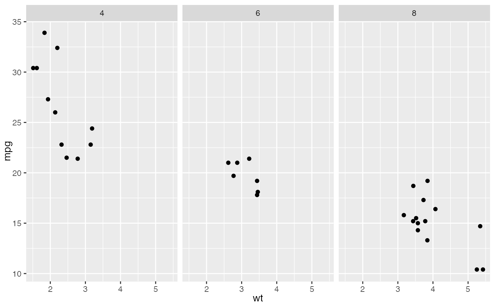
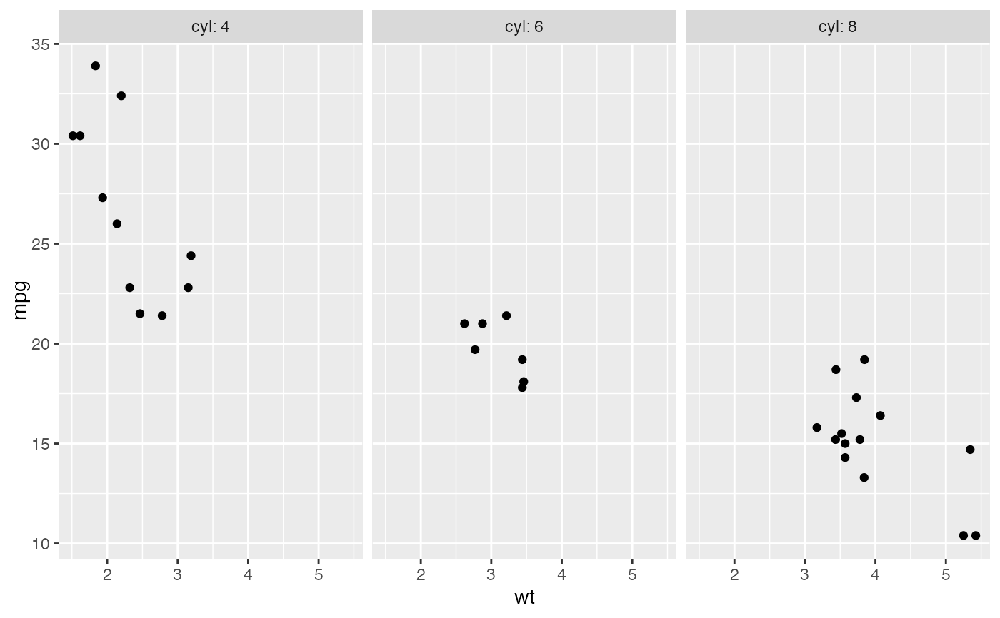
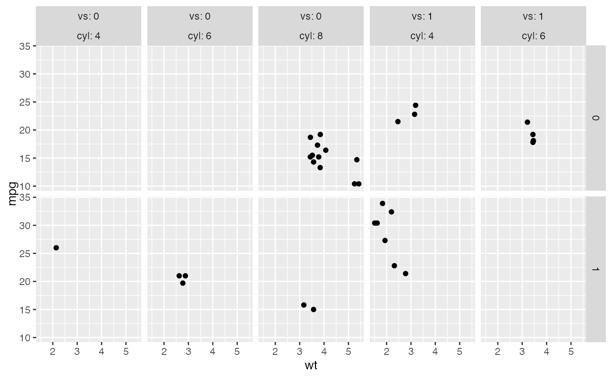
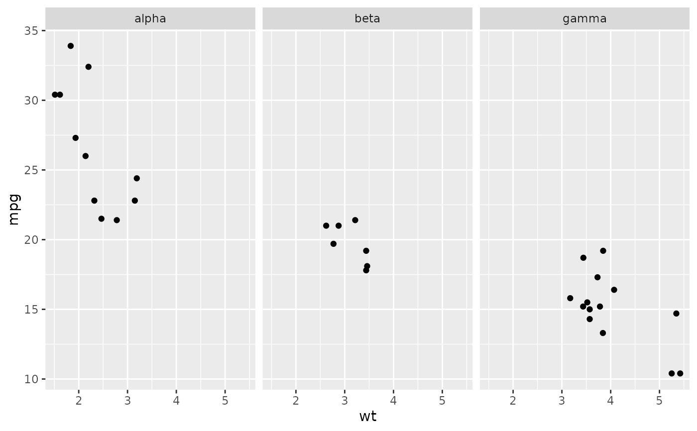
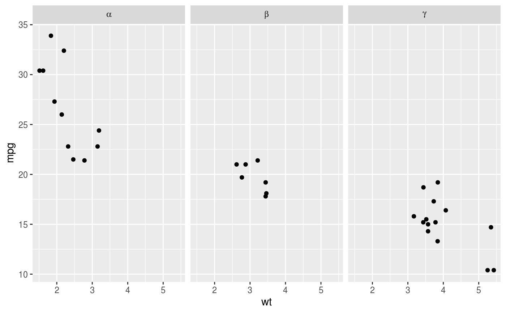

Labeller functions are in charge of formatting the strip labels of
facet grids and wraps. Most of them accept a multi_line
argument to control whether multiple factors (defined in formulae
such as ~first + second) should be displayed on a single
line separated with commas, or each on their own line.
Usage
label_value(labels, multi_line = TRUE)
label_both(labels, multi_line = TRUE, sep = ": ")
label_context(labels, multi_line = TRUE, sep = ": ")
label_parsed(labels, multi_line = TRUE)
label_wrap_gen(width = 25, multi_line = TRUE)Arguments
- labels
Data frame of labels. Usually contains only one element, but faceting over multiple factors entails multiple label variables.
- multi_line
Whether to display the labels of multiple factors on separate lines.
- sep
String separating variables and values.
- width
Maximum number of characters before wrapping the strip.
Details
label_value() only displays the value of a factor while
label_both() displays both the variable name and the factor
value. label_context() is context-dependent and uses
label_value() for single factor faceting and
label_both() when multiple factors are
involved. label_wrap_gen() uses base::strwrap()
for line wrapping.
label_parsed() interprets the labels as plotmath
expressions. label_bquote() offers a more flexible
way of constructing plotmath expressions. See examples and
bquote() for details on the syntax of the
argument.
Writing New Labeller Functions
Note that an easy way to write a labeller function is to
transform a function operating on character vectors with
as_labeller().
A labeller function accepts a data frame of labels (character
vectors) containing one column for each factor. Multiple factors
occur with formula of the type ~first + second.
The return value must be a rectangular list where each 'row' characterises a single facet. The list elements can be either character vectors or lists of plotmath expressions. When multiple elements are returned, they get displayed on their own new lines (i.e., each facet gets a multi-line strip of labels).
To illustrate, let's say your labeller returns a list of two character vectors of length 3. This is a rectangular list because all elements have the same length. The first facet will get the first elements of each vector and display each of them on their own line. Then the second facet gets the second elements of each vector, and so on.
If it's useful to your labeller, you can retrieve the type
attribute of the incoming data frame of labels. The value of this
attribute reflects the kind of strips your labeller is dealing
with: "cols" for columns and "rows" for rows. Note
that facet_wrap() has columns by default and rows
when the strips are switched with the switch option. The
facet attribute also provides metadata on the labels. It
takes the values "grid" or "wrap".
For compatibility with labeller(), each labeller
function must have the labeller S3 class.
Examples
mtcars$cyl2 <- factor(mtcars$cyl, labels = c("alpha", "beta", "gamma"))
p <- ggplot(mtcars, aes(wt, mpg)) + geom_point()
# The default is label_value
p + facet_grid(. ~ cyl, labeller = label_value)

# \donttest{
# Displaying both the values and the variables
p + facet_grid(. ~ cyl, labeller = label_both)

# Displaying only the values or both the values and variables
# depending on whether multiple factors are facetted over
p + facet_grid(am ~ vs+cyl, labeller = label_context)

# Interpreting the labels as plotmath expressions
p + facet_grid(. ~ cyl2)

p + facet_grid(. ~ cyl2, labeller = label_parsed)

# }